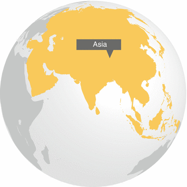

Asia is home to 60 % of the world’s population, and there are large variations in the region with regard to urbanization levels and urban growth rates. While some countries have populations that are predominantly urban (Singapore, 100 %; Malaysia, 72 %; Japan, 67 %; Indonesia, 54 %), others have populations that are predominantly rural (Bangladesh, 28 %; Vietnam, 29 %; India, 30 % Lao People’s Democratic Republic, 33 %; Thailand, 34 %). Despite these variations, three characteristics define the region.
Many countries that are largely rural are undergoing massive demographic and economic transitions, resulting in a growing percentage of their populations living in urban areas. For example, the combined populations of Kolkata and Dhaka in the Ganges– Brahmaputra Delta increased from 4.9 million in 1950 to more than 30 million in 2010. The changing demography of these mega-deltas is also changing their economies, landscapes, and biodiversity (see Chap. 1, Fig. 1.1).
Half the increase in urban land across the world over the next 20 years will occur in Asia, with the most extensive patterns of change expected to take place in India and China.
The influx of large-scale capital to many Asian deltas has transformed the local economic base from a primarily agricultural one to a manufacturing and processing economy, bringing about fundamental changes in landscapes and their ecologies. For example, the Irrawaddy Delta economy in Myanmar was traditionally intensive rice cultivation, fishing, and forestry, supported by mangrove swamps. However, as Yangon, the largest city in Myanmar and the economic, financial, and trading hub of the country, increases in size on the periphery of the delta, it is affecting the coastal mangrove ecosystems. Urbanization and associated land practices—the damming of rivers, seasonal flood control, water diversions, agricultural practices, and construction of the built environment—have also transformed the supply and routing of sediments and changed the basic geomorphology and ecology of the delta (Textbox 4.1).
Textbox 4.1 Indonesia: Illustrating Asia’s Three Development Characteristics
The 17,500 islands of the Indonesian archipelago and the surrounding seas contain the highest terrestrial and marine biodiversity on earth. However, the nation’s ecosystems are severely impacted by land-use changes, which mainly follow two trends: urbanization and deforestation (Rustiadi and Panuju 2002). In the 1950s Indonesia’s urban population was about 15 %; by 2010 half of the total population of 237.6 million was urban. The World Bank estimates that by 2025, Indonesia’s urban population will represent 67.5 % of a total projected population of 270.5 million.
Across the archipelago, there are strikingly different patterns of urbanization and economic growth. About 68 % of the urban population lives in Java. Although there are many cities in Java, by far the largest is the capital city of Jakarta. The greater metropolitan region of Jakarta is the second largest in the world, 5,897 km2 containing nearly 12 % of the entire Indonesian population (Hudalah and Firman 2012). Jakarta is now so densely populated that it is estimated that traffic will come to a complete standstill by 2014. However, as Indonesia’s largest cities continue to expand, a reverse trend sees more affluent classes moving into the surrounding countryside to escape the excessive concentration, physical congestion and breakdown of urban services and amenities (Rustiadi and Panuju 2002). In Jakarta, the suburban population surpassed that of the city by the 1990s.
While the largest Indonesian cities and their suburbs have grown at a record-breaking pace, the annual population growth rate in small and medium-sized Javanese towns is far below the national average and even decreasing. This pattern is also found elsewhere in Indonesia: small cities with populations in the range of 100,000–500,000 actually lost population between 1993 and 2007, with average declines of more than 2 % per year.
These demographic patterns reflect several large historical trends. In 1967, Indonesia launched the Green Revolution in agriculture and the same year, the forests of the Outer Islands were opened to logging for export. At about the same time, other extractive industries like mining and petroleum began to take off. These neoliberal economic policies triggered large-scale migration from the countryside to the cities. The market-oriented policy of the 1980s boosted the economy but also led to an uncontrolled growth of large-scale private land development in the suburbs of Jakarta (Firman 2000). In the 1990s, economic growth became erratic, as a consequence of political and financial crises but as the economy recovered, so did urbanization. Between 2000 and 2005, an estimated 22,872 ha of land were converted to built-up areas (Hudalah and Firman 2012).
By the 1990s, much of Indonesian Borneo had been deforested, leaving logging debris in place of canopy trees. During the El Nino drought in 1998, 600 million tons of carbon were released from the forests of Borneo into the atmosphere. For comparison, that year the Kyoto target for reduction in carbon emissions for the Earth was 500 million tons. The smoke from the burning forests, so dense that at times the airport in neighboring Singapore had to be closed, created a crisis in air quality for Borneo.
By 2004, the volume of timber exports from Borneo exceeded all tropical wood exports from Africa and Latin America combined. Largely as a consequence of deforestation, Indonesia became the third largest source of carbon emissions, after the US and China. The pace of deforestation continued with the massive expansion of oil palm plantations. From 1990 to 2010, over half a million km2 of oil palm plantations were planted in Indonesian Borneo, 90 % on formerly forested land, which is projected to significantly increase their contribution to Indonesia’s 2020 CO2-equivalent emissions of 0.12–0.15 GtC year−1) (Carlson et al. 2013).
The disappearance of the forests and the expansion of oil palm plantations caused massive relocations of rural populations in Borneo, Sumatra and smaller islands. On Java and Bali, population growth and urbanization have increased while the expansion of monocrop agriculture has led to steep declines in biodiversity in the countryside.
References
Carlson, K., Curran, L. M., Asner, G. P., Pittman, A. M., Trigg, S. N., & Adeney, J. M. (2013). Carbon emissions from forest conversion by Kalimantan oil palm plantations. Nature Climate Change, 3, 283–287.CrossRef
Firman, T. (2000). Rural to urban land conversion in Indonesia during boom and bust periods. Land Use Policy, 17, 13–20.CrossRef
Hudalah, D., & Firman, T. (2012, February). Beyond property: Industrial estates and post-suburban transformation in Jakarta Metropolitan Region. Cities: The International Journal of Urban Policy and Planning, 29(1), 40–48. Elsevier.
Rustiadi, E., & Panuju, R. D. (2002). Spatial pattern of suburbanization of land-use change process: Case study in Jakarta suburb. In Y. Himiyama, M. Hwang, & T. Ichinose (Eds.), Land-use changes in comparative perspective (pp. 33–52). Plymouth: Science Publishers, Inc.